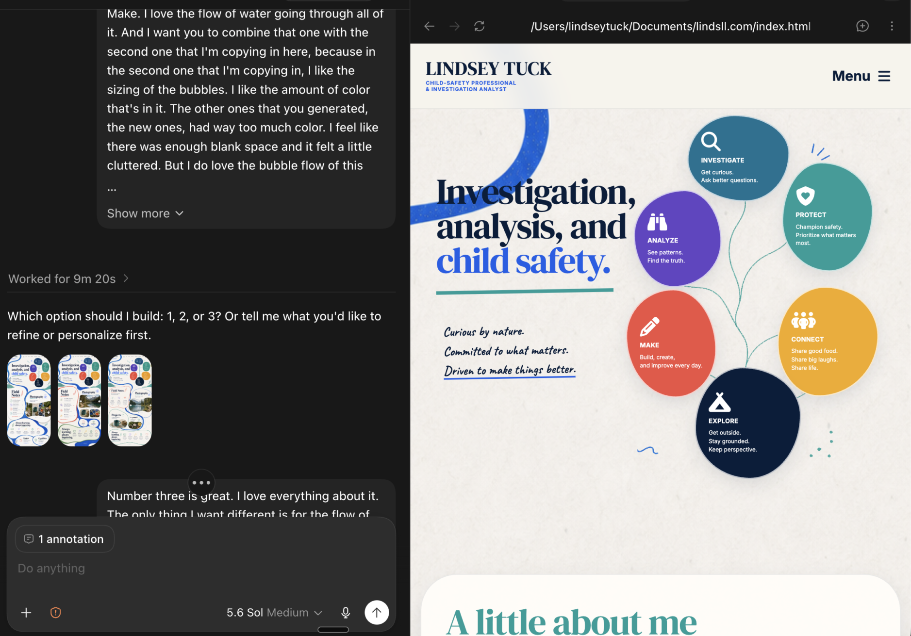

Project · AI-assisted web design
Building a website through conversation.
A hands-on experiment in using Codex to design, revise, and shape my portfolio one prompt, screenshot, and clarification at a time.

01
Starting with an idea
I began with a simple request: create a hello world website. Once I saw that first page running, the project grew into something more personal. I wanted a professional portfolio that could introduce who I am, show selected work, hold future articles, and still feel like me.
I brought the subject matter and direction: child safety, investigation, public service, learning, photography, and a visual personality shaped by outdoor adventure, shared food, making things, and bold everyday color. Codex helped translate those ideas into HTML, CSS, responsive layouts, navigation, a photo carousel, project pages, and a local website I could review in the browser.
02
Designing through prompts
Most of the design happened as a conversation. I described what felt right or wrong, marked specific elements in the browser, shared reference images, and asked for targeted changes. The direction moved from pink and orange shapes to a cleaner visual system built around flowing water, connected bubbles, strong section titles, and generous white space.
The most useful prompts included both the desired change and the boundaries around it: make the water slightly thicker, keep everything else the same; move the bubbles to the right of the headline; make the mobile version smaller without changing the desktop composition. Each round turned a visual reaction into a more precise instruction.
The better I became at explaining what I meant, the better the website became.
03
Where it got difficult
One frustration was that I could not simply click into the page and type as if I were editing a document. Even a small wording change had to be communicated, interpreted, edited in the code, and checked in the browser.
Ambiguous prompts also created unexpected results. Asking to change a color, resize a shape, or adjust the water could affect more of the page than I intended. I learned to name the exact section, describe the outcome, state what should remain unchanged, and specify whether I was commenting on desktop or mobile.
This made the process slower at times, but it also exposed an important part of working with AI: clarification is not a failure. It is part of translating an idea into something another system can act on.
04
What I made
The result is a responsive personal portfolio with an introduction, an about section, selected projects, project articles, a photography carousel, a résumé link, and a visual language that connects analysis with curiosity and human experience.
Codex also helped me work beyond surface design. I used it to connect the site to local files, organize assets, build article templates, add a culminating project paper and PDF link, debug layout issues, and make the navigation and content work across screen sizes.
05
What I learned
This project changed how I think about prompting. A useful prompt is not just a command. It is a compact design brief. It identifies the object, the problem, the desired result, the constraints, and the evidence I will use to judge the result.
I also developed a more realistic understanding of AI's capabilities. Codex can turn plain-language direction into working code, trace issues across files, generate alternatives, and respond quickly to detailed visual feedback. It still needs context, verification, and human judgment. I remain responsible for deciding what feels accurate, useful, and authentically mine.
Most importantly, I learned that technical work can be collaborative even when I am still building my own technical vocabulary. I do not need to know every implementation detail before I can ask a good question, test an idea, and refine the outcome.